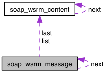

soap_wsrm_message Struct Reference
Linked list of unacknowledged messages stored for retransmission.
More...
#include <wsrmapi.h>
Collaboration diagram for soap_wsrm_message:

[legend]List of all members.
Detailed Description
Linked list of unacknowledged messages stored for retransmission.
Member Data Documentation
The documentation for this struct was generated from the following file:
- /Users/engelen/Projects/gsoap/plugin/wsrmapi.h
Generated on Sun May 9 10:52:07 2010 for gSOAP WS-ReliableMessaging by
 1.3.8
1.3.8